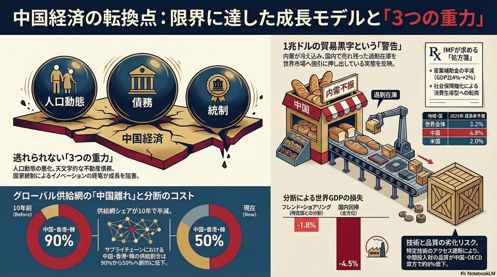
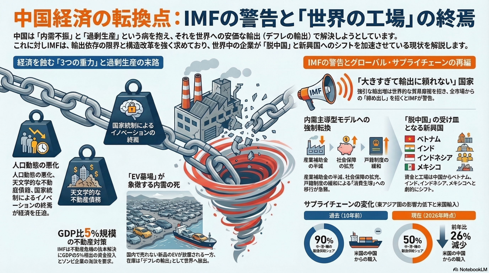

この資料が示すのは、中国経済の約25〜30%を占める不動産セクターが直面している「負の連鎖」です。IMFは、単なる資金供給ではなく、公的資金を投入して「未完成物件」を強制的に完成させ、家計の不安を払拭することを強く求めています。これは、市場原理に任せるのではなく、国家が直接的な債務整理に乗り出すべきだという、踏み込んだ要求です。

このデータは、中国の内需が極めて脆弱であることを裏付けています。家計消費が伸び悩む中、政府が供給側（製造業）への補助金を継続することで、行き場を失った製品が安値で海外へ流出しています。IMFは、これが世界規模でのデフレ輸出と通商摩擦を引き起こしていると分析。供給から「社会保障や家計支援」へ資源を再配分するよう促しています。
今回の対中勧告がこれまでと一線を画す理由は、IMFが「中国政府のこれまでの対策は限定的である」とはっきりと否定的な見解を示した点にあります。これまでは外交的な配慮から「さらなる努力が期待される」といった表現が使われてきましたが、今回は「中央政府による直接的な財政支出」を具体的な解決策として提示しました。
これは、地方政府の債務問題（隠れ債務）がすでに地方レベルの対応能力を超えており、中央政府がその責任を負わなければ金融システム全体が崩壊しかねないという、強い危機感の表れと言えます。